I really enjoyed this homework, because I built step by step a rasterizer able to draw images and shapes that are more and more complex. It takes a simplified SVG file and turns it into pixels. First, I drew single color triangles by testing if the center of each pixel is inside the triangle. Then I added supersampling to reduce the jagged edges, and 3 × 3 matrices in homogeneous coordinates to apply the SVG transforms. After that, I interpolated colors inside the triangles, and finally I mapped textures on them, with nearest and bilinear pixel sampling and with mipmaps for level sampling. I learned how to compute the barycentric coordinates α, β and γ, and I understood that the same three numbers are used in many places: to know if a point is inside a triangle, to find its color, and to find its position in a texture. I also understood better what a texture is and how to apply it on a surface. Finally, I learned that most of this homework is about sampling: aliasing appears on the edges of the triangles, in magnified textures and in reduced textures, and each case needs its own solution (supersampling, bilinear sampling or mipmaps). For the extra credit, I compared grid and random supersampling, and I found a scene with a moiré pattern where random sampling works better.
To rasterize a triangle, I first compute its bounding box, which is the smallest rectangle aligned with the axes that contains the three vertices. In x, it goes from floor(min(x0, x1, x2)) to floor(max(x0, x1, x2)), and the same in y. Both bounds are included. Then, for each pixel (x, y) of this box, I test the center of the pixel, the point (x + 0.5, y + 0.5). To know if this point is inside the triangle, I compute its barycentric coordinates α, β and γ. Each coordinate is the value of the line equation of one edge at this point, divided by its value at the opposite vertex, and γ = 1 − α − β. The point is inside the triangle if α, β and γ are all greater than or equal to 0, and in this case I write the color of the triangle in the sample buffer. Because each coordinate is a ratio of two values of the same line equation, changing the order of the vertices changes the sign of both values, so the test works for clockwise and counterclockwise triangles. Using ≥ 0 instead of > 0 also means that points exactly on an edge are drawn.
At first, my loops used x < x_max and y < y_max, so the upper bounds were not included. The last column and the last row of each bounding box were never tested, and some pixels inside the shapes stayed white. Figure 1 shows this error on basic/test3.svg: thin white lines appear between neighboring triangles. Using x <= x_max and y <= y_max fixed the problem.
Figure 1: basic/test3.svg rendered with the bounding box bug.
My algorithm is the bounding box method itself. Each pixel of the box is visited once, and each visit does one test with a fixed number of operations. No sample outside the box is tested and no sample is tested twice, so the cost is proportional to the number of samples in the bounding box. The final image is also the same as if I tested the whole screen, because the box contains the whole triangle: a sample outside the box cannot be inside the triangle.
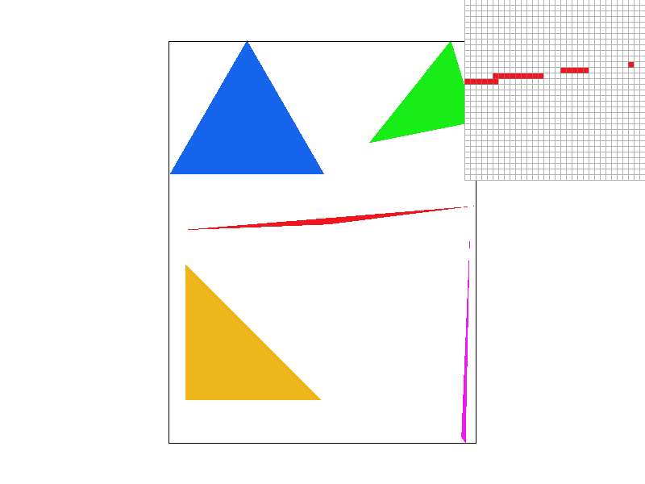
Figure 2: basic/test4.svg, default view, 1 sample per pixel, pixel inspector on the thin red triangle.
With a single sample per pixel, each pixel is either fully red or fully white, so the edges look like stairs and the tip of the thin triangle is cut into separate pixels. This effect is called aliasing, and Task 2 reduces it with supersampling.
Supersampling is useful because one sample per pixel gives a binary result: a pixel is either inside or outside the triangle. This creates jagged edges and can make thin triangles disappear. With supersampling, I take several samples in each pixel and the final color is their average, so it gets close to the fraction of the pixel covered by the triangle. To store the samples, I use the sample buffer, a vector of colors of size width × height × sample_rate, where sample s of pixel (x, y) is stored at index (y × width + x) × sample_rate + s. I changed the pipeline in four places. In set_sample_rate and set_framebuffer_target, the sample buffer is resized each time the sample rate or the window size changes. In rasterize_triangle, each pixel is divided into a grid of k × k cells with k = √sample_rate, and I run the inside test of Task 1 at the center of each cell, the point (x + (i + 0.5)/k, y + (j + 0.5)/k), then write the color in sample i × k + j. In fill_pixel, used for points and lines, I write the same color in all the samples of the pixel, otherwise lines such as the black border of test4.svg would look lighter after the average. Finally, resolve_to_framebuffer computes the mean of the sample_rate colors of each pixel for R, G and B, and converts it to 8 bits in the framebuffer. This average is what antialiases the triangles: a pixel on an edge gets a color between the color of the triangle and the color of the background.
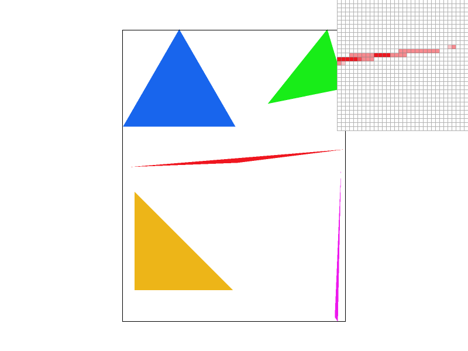 | |||
Grid, 1 spp | Random, 1 spp | Grid, 4 spp | Random, 4 spp |
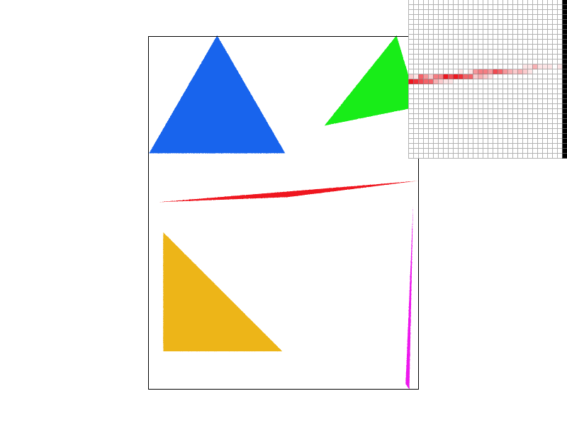 | |||
Grid, 9 spp | Random, 9 spp | Grid, 16 spp | Random, 16 spp |
Figure 3: basic/test4.svg with grid and random supersampling side by side for each sample rate, pixel inspector on the thin red triangle.
The grid images of Figure 3 show basic/test4.svg at 1, 4, 9 and 16 samples per pixel, with the pixel inspector on the thin part of the red triangle. At 1 sample per pixel, pixels are either red or white, and the triangle is cut into separate pixels: it is thinner than one pixel, so it often misses the pixel center. At 4 samples per pixel, pink pixels appear along the edge and the triangle becomes continuous. At 16 samples per pixel, the edge becomes a smooth gradient from red to white. This happens because the color of a pixel now depends on how many of its samples are inside the triangle. With n samples, the covered fraction can take n + 1 values instead of only 0 or 1, so the result gets closer to the real coverage of the pixel.
For the extra credit, I implemented random supersampling. Instead of placing the samples on a regular grid, each of the sample_rate samples is placed at a random position in the pixel, (x + r1, y + r2) with r1 and r2 uniform in [0, 1]. The rest of the pipeline does not change. This is pure random sampling and not jittered sampling, because the samples are not forced to stay one per cell. The random images of Figure 3 can be compared with the grid images at the same sample rate. At 1 sample per pixel, random sampling is worse: the edges of all the triangles become noisy, because the sample is no longer at the pixel center. At 16 samples per pixel, the two methods give very close results. I also noticed that on test7.svg (Task 4), the noise of random sampling is visible on the whole color wheel and not only on the edges, because the color changes inside every pixel. For this reason, the submitted code uses the grid everywhere; random sampling can be enabled again by swapping two commented lines in rasterize_triangle.
To find a case where random sampling works better, I needed a scene with a fine and regular pattern. The idea of the scene was suggested by an AI assistant (Claude): svg/extra/moire.svg is a fan of 120 thin black triangles that start from the same point. I understood why this scene is a good test. Near the point, the triangles become much thinner than a pixel, so the pattern is finer than the spacing of the samples. With the grid at 9 samples per pixel, the scene is in fact sampled regularly at 3 times the resolution of the screen, and lines finer than one third of a pixel are above the Nyquist limit of this grid. They cannot be represented and are aliased into large low frequency curves. Figure 4 confirms this: with the grid, large curves and crosses appear although they are not in the scene. This is a moiré pattern. With random sampling, the samples have no regular spacing, so the aliasing does not create a structured pattern but only a fine noise, and the area near the point becomes a gray texture, closer to the real average of black and white. Random sampling is therefore better when the scene contains fine and regular patterns, even if it adds noise on simple edges. One limit is that the random positions are drawn again at each redraw, so the noise changes every time the view moves.
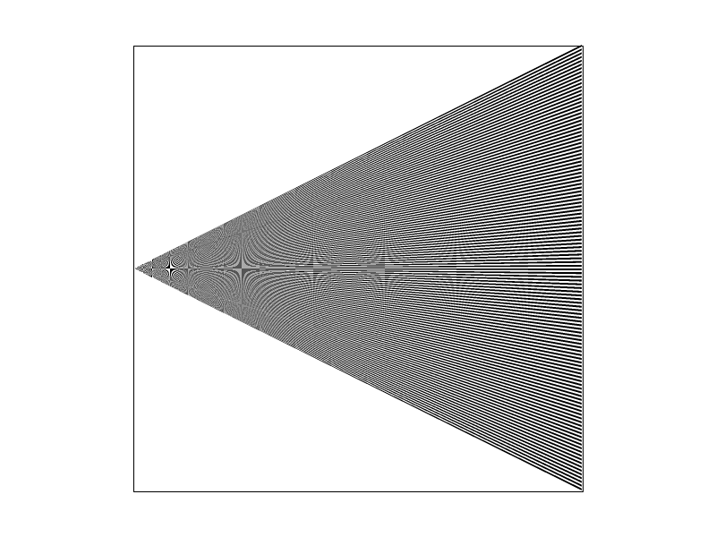 | 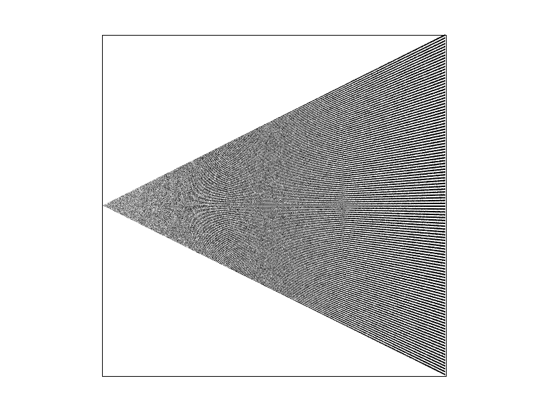 |
Grid, 9 spp | Random, 9 spp |
Figure 4: svg/extra/moire.svg at 9 samples per pixel, grid (left) and random (right).
I implemented translate, scale and rotate as 3 × 3 matrices in homogeneous coordinates, where a point (x, y) is written (x, y, 1). A translation is not a linear transformation in 2D, so it cannot be written with a 2 × 2 matrix. With the third coordinate, it becomes a matrix product like the two others, and all the transforms of the SVG hierarchy can be combined by multiplying their matrices. At first, I made a mistake when I filled the matrices: I thought that M[i] gave row i, but in the CGL library Matrix3x3 stores its data by columns, so M[i] is column i. My matrices were therefore transposed, and robot.svg was rendered as an empty canvas because the translation terms ended up in the last row. Instead of rewriting every matrix, it was faster to keep my code and return M.T(), the transpose of M.
For my_robot.svg, I wanted cubeman to look like a person of the ground crew on an airport runway, who sends signals with two small flags. I changed the torso into a yellow high visibility vest with two gray reflective stripes, made with two thin rectangles (scale(1 .15)) placed with translate. The flags are red and yellow like real semaphore flags: each flag is a square made of two triangles of different colors. For the pose, each arm is a group rotated by 45° at the shoulder, so one arm points up to the left and the other one down to the right, which gives the diagonal line of a semaphore signal. The groups are nested: the upper arm, the forearm, the stick and the flag are all inside the rotated arm group, so they all follow the rotation. The stick has an extra rotate(30) to bend the wrist. I met two difficulties. First, the order of the transforms matters: the translation to the shoulder must come before the rotation, otherwise the arm turns around the center of the robot. Second, a rotation turns a block around its own center, because every polygon is defined from −50 to 50, and not around one of its ends like a real joint. In a first attempt, I rotated only the forearm, and it moved away from the elbow. To turn a limb around its end, an extra translation is needed to move this end onto the pivot point before the rotation. In the final pose, I rotated the whole arm at once and placed the stick and the flag by hand with translate so that they stay aligned with the hand.
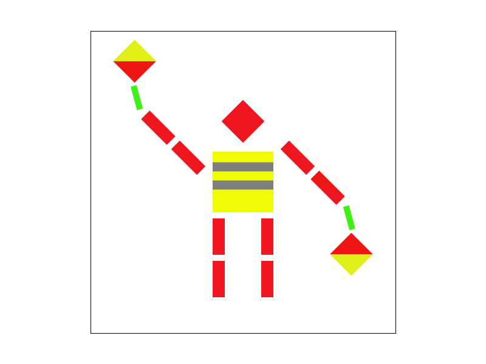
Figure 5: my_robot.svg, cubeman in a high visibility vest sending a semaphore signal with two flags.
The barycentric coordinates (α, β, γ) of a point P are the weights of the three vertices of the triangle at this point, with α + β + γ = 1, so that P = αA + βB + γC. Each weight tells how close the point is to one vertex: α is the distance from P to the edge opposite to A, divided by the distance from A to this edge. This is exactly the ratio of line equations that I already compute in Task 1. For example, α = 1 and β = γ = 0 at vertex A, α = β = γ = 1/3 at the center of the triangle, and one weight becomes negative when P is outside. In Task 1, I only use the sign of the weights to know if a sample is inside. In Task 4, I also use their values to mix the colors of the vertices: color = α·c0 + β·c1 + γ·c2. Figure 6 shows a single triangle with a red, a green and a blue vertex: each corner has its pure color, and the colors blend smoothly toward the center, where the three weights are equal. The same interpolation is used again in Task 5 for the texture coordinates (u, v).
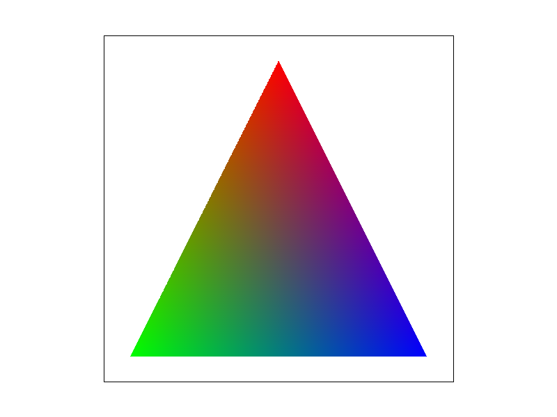
Figure 6: svg/extra/rgb_triangle.svg, one triangle with a red, a green and a blue vertex.
Figure 7 shows basic/test7.svg with the default view and 1 sample per pixel. The color wheel is made of many thin triangles. Each one has a black vertex at the center and two vertices of close colors on the border, so the colors change continuously around the wheel and get darker toward the center. There is no gap between the triangles, because two neighboring triangles have the same colors at the ends of their common edge, and therefore the same color along this edge.
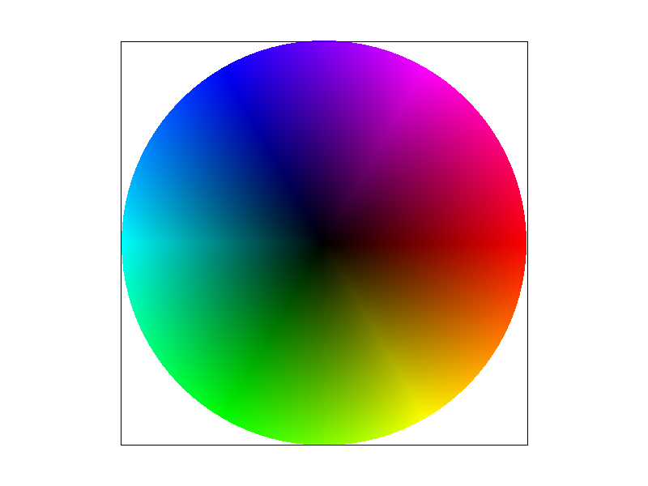
Figure 7: basic/test7.svg at 1 sample per pixel.
In texture mapping, each vertex of the triangle has texture coordinates (u, v) instead of a color. For each sample, I interpolate (u, v) with the same barycentric weights as in Task 4, and I read the color of the texture image at this position. Pixel sampling is the way this color is read: the point (u × width, v × height) almost never falls exactly on a texel, so I have to choose which texels to use. With nearest sampling, I take the texel that contains the point, with floor(u × width) and floor(v × height). It reads only one texel, but when the texture is enlarged each texel covers several pixels and the image looks made of blocks. With bilinear sampling, I take the four texels whose centers surround the point and compute their weighted average. I first subtract 0.5 to go from the corners of the texels to their centers, then the fractional parts dx and dy give the weights of the four texels. I met two bugs in this function. First, my weights were assigned to the wrong corners: a point very close to a texel returned the color of the opposite texel in the diagonal. Second, I clamped the indices of the neighbors after reading the texels, so a point close to the border of the texture read outside the array and made the program crash. Now the four indices are clamped to the size of the texture before any read.
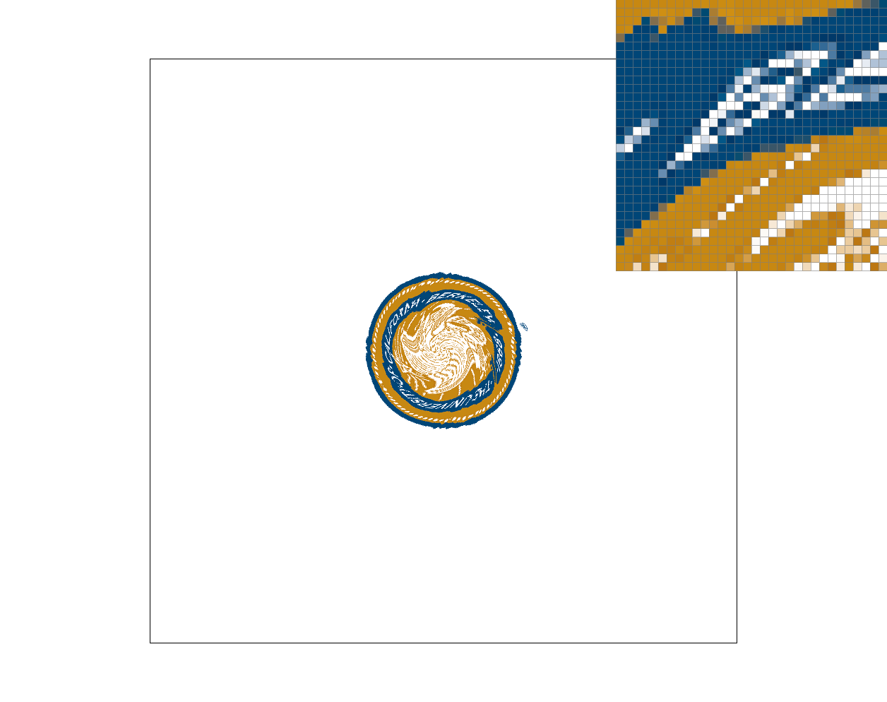 | |
Nearest, 1 spp | Bilinear, 1 spp |
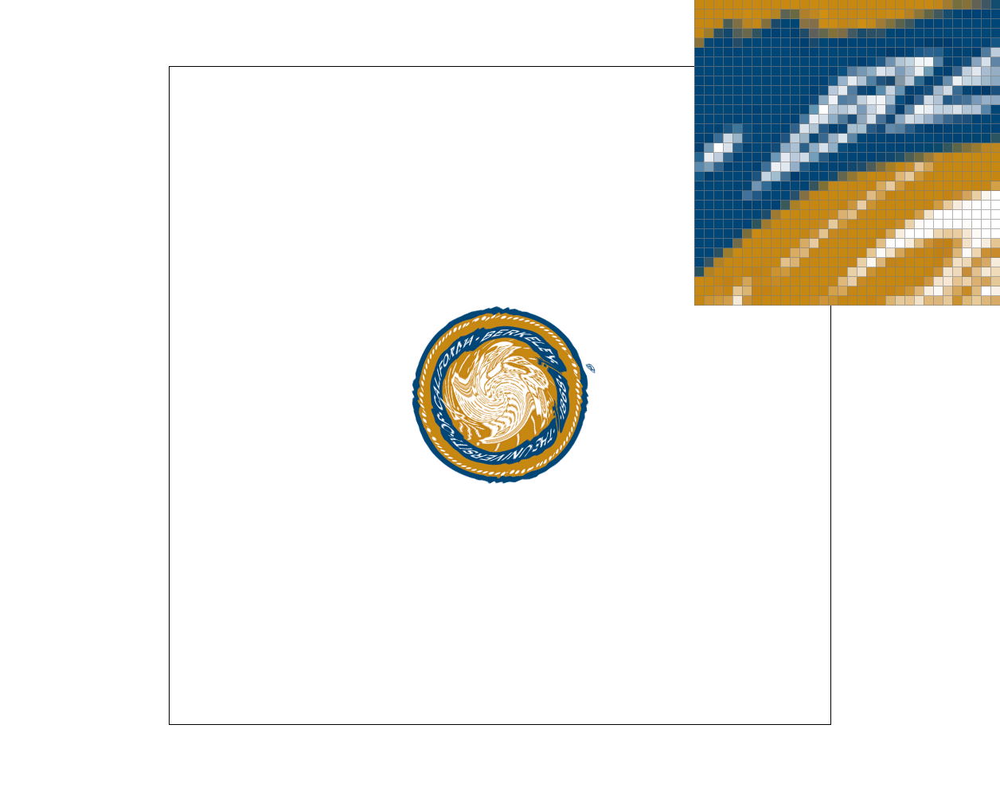 | |
Nearest, 16 spp | Bilinear, 16 spp |
Figure 8: svg/texmap/test5.svg with nearest and bilinear pixel sampling, at 1 and 16 samples per pixel, pixel inspector on the letters of the seal.
I first tried svg/texmap/test1.svg, but even after many screenshots at different places, I could not see a large difference between the two methods, and I thought that I had missed something in my code. The reason was the scene and not the code: the texture map.png is 2058 × 1036 texels, so in the default view one pixel covers several texels and both methods read almost the same color. In this case of minification, like on the thin grid lines of test1.svg, bilinear sampling only helps a little, because many texels fall inside one pixel and it only uses four of them. This problem is solved by the mipmaps of Task 6. The difference is much clearer in svg/texmap/test5.svg, where the texture is only 260 × 260 texels and contains thin letters with a strong contrast. Figure 8 shows this scene with the pixel inspector on the letters of the seal. With nearest sampling, the result is almost binary: each pixel takes the color of one texel, so there are hard steps between white, blue and gold. Bilinear sampling smooths all these transitions and makes the letters easier to read. The gap between the two methods becomes even larger when the texture is magnified, because nearest sampling then shows each texel as a visible block. With 16 samples per pixel, each pixel averages 16 texture reads, so nearest sampling also becomes smoother and the difference between the two methods gets smaller, but this costs 16 times more work than bilinear sampling at 1 sample per pixel.
Level sampling solves the problem of minification. When the texture is reduced on the screen, one pixel covers many texels, but nearest and bilinear sampling only read one or four of them, which creates aliasing. A mipmap stores the texture at several resolutions: each level is an average of the previous one and is two times smaller in each direction. The idea is to read the texture in the level where one texel has about the size of one pixel. To choose this level, I compute the texture coordinates not only at the sample (x, y) but also at (x + 1, y) and (x, y + 1), with the same barycentric formula. The differences give how much (u, v) changes when I move by one pixel. In get_level, I scale the u component by the width and the v component by the height of the texture, and the level is log2 of the largest of the two lengths. In sample, L_ZERO always uses level 0, L_NEAREST rounds the level to the closest integer, and L_LINEAR reads the two levels around it and mixes them with the weight level − floor(level). Inside each level, I use nearest or bilinear sampling from Task 5, so the two settings are independent. The part that took me the most time was to clamp the level at both ends. The level is negative when the texture is magnified and larger than the last level when it is very reduced. My first versions read outside the mipmap and crashed, and with L_LINEAR I also had to keep the mixing weight between 0 and 1 after clamping the level. Now the level is always clamped between 0 and the last level of the mipmap.
The three techniques have different costs. Supersampling is the most expensive: with 16 samples per pixel, the whole rasterization and texture reading is done 16 times per pixel, and the sample buffer is 16 times larger. It is very good against aliasing on the edges of triangles, and it also reduces texture aliasing a little because it averages several texture reads. Pixel sampling is almost free: bilinear sampling reads four texels instead of one and uses no extra memory, but it only helps when the texture is magnified. Level sampling needs about one third more memory to store all the levels of the mipmap, and a small extra time to compute the level (two more barycentric evaluations per sample, and two levels to read with L_LINEAR). It is the only one of the three that really solves texture aliasing in minification.
L_ZERO, P_NEAREST | L_ZERO, P_LINEAR |
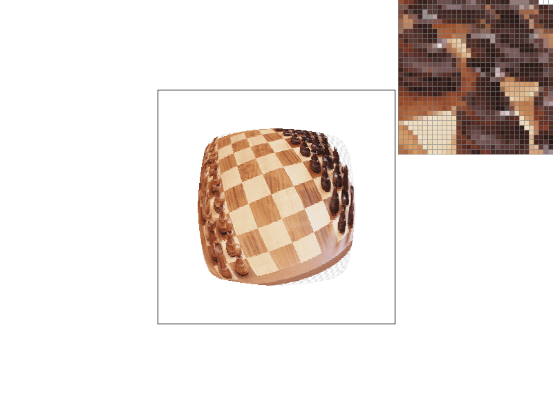 | |
L_NEAREST, P_NEAREST | L_NEAREST, P_LINEAR |
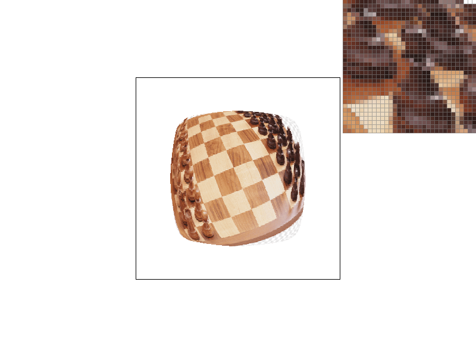 | |
L_LINEAR, P_NEAREST | L_LINEAR, P_LINEAR (trilinear) |
Figure 9: svg/texmap/my_chess.svg with my own texture img/echec.png (a photo of a chess board), at 1 sample per pixel, pixel inspector on the chess pieces near the border of the sphere.
For Figure 9, I used a photo of a chess board that I found myself, mapped on the same sphere as test1.svg. All the screenshots are taken at 1 sample per pixel, so that supersampling does not hide the effect of the mipmaps. The pixel inspector is placed on the chess pieces near the border of the sphere, where the texture is the most reduced. With L_ZERO, the result is noisy: neighboring pixels read texels that are far from each other in the texture, so dark and light pixels are mixed without any order. With L_NEAREST, the texture is read in a smaller level, so each pixel gets the average color of the area it covers and the noise disappears. L_LINEAR also removes the jumps between two levels and gives the smoothest result, especially with bilinear sampling, which is trilinear filtering. However, the pieces near the border also become blurry. On a sphere, the texture there is compressed much more in one direction than in the other, but get_level chooses one level from the largest direction, so the image is blurred in both directions. This is a limit of mipmaps, and anisotropic filtering is designed to solve it.